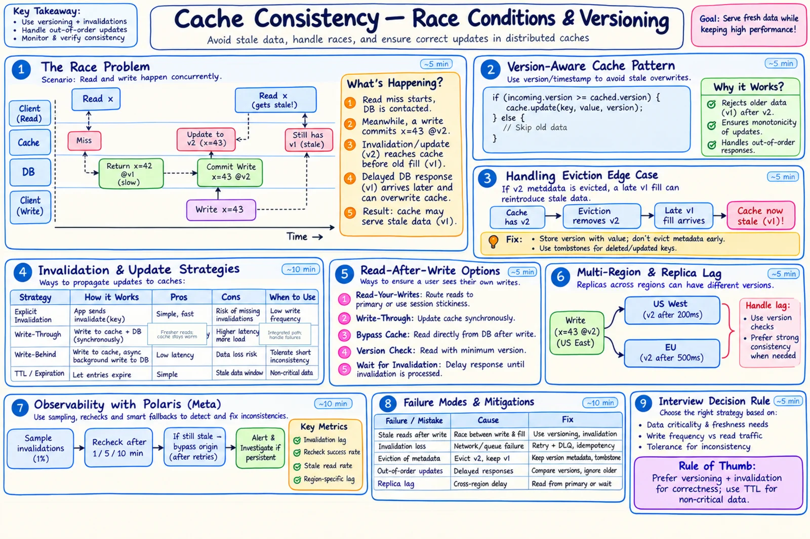

Topic · Caching in Depth
Cache Consistency
Stale fills, lost and out-of-order invalidations, and how source versions, tombstones, and observability keep a cache honest.


Quick Revision
- TTL doesn't stop lost invalidations, out-of-order events, or stale fills.
- Store only if
incoming.version ≥ cached.version; versions come from the source (sequence, log offset), not wall clocks. - Deletes need versioned tombstones; version metadata must outlive evictions.
- Read-after-write: version token, writer bypass, or primary read.
- Measure consistency: sample invalidations, recheck, alert on lag.
The stale-fill race
1. Read misses, starts DB fetch: x=42 @v1 2. Write commits x=43 @v2 3. v2 invalidation/update reaches cache first 4. Delayed v1 read response arrives 5. Naive fill overwrites v2 with stale v1 fix: store only when incoming.version >= cached.version
- Eviction edge case - if v2 is evicted, the cache forgets v2 existed and a late v1 looks valid. Keep version metadata longer, store versioned tombstones, use immutable versioned keys, or revalidate at origin for critical paths.
- Deletes - carry
deleted @v3; retain tombstones beyond max event/fill delay. - Multi-key - invalidation isn't transactional across keys; prefer one aggregate key or versioned snapshots.
- Multi-region - async invalidation = regional stale windows; versioned events, lag metrics, primary reads for critical ops; decide stale-vs-fail during partitions.
Read-after-write, weakest to strongest
- Accept bounded staleness.
- Invalidate the writer's L1 immediately.
- Return a version token; reads require
version ≥ token. - Bypass cache for the writing session.
- Route to the primary / source of truth.
- Wait for invalidation acknowledgement (higher latency, lower availability).
Consistency observability
- Polaris-style (Meta) - sample invalidations, read cache replicas as a client, recheck at multiple timescales, bypass to origin only for persistent anomalies. Meta reported TAO going from six to ten nines (5-minute measure).
- Metrics - invalidation send/receive/retry/drop, lag by region and shard, stale-read samples, % consistent within 1/5/10 min, rejected version regressions.
Failure modes
- Stale fill overwrites new value - source versions + compare-and-set.
- Lost invalidation - outbox/CDC, retries, dead letter, TTL backstop, alarms.
- Out-of-order invalidations - monotonic version; ignore older events.
- Duplicate events - idempotent consumer by event ID/version.
- Delete resurrected - versioned tombstone retained past the race window.
- Version lost on eviction - separate metadata/tombstone or origin revalidation.
- L1 instances disagree - pub/sub hints, short L1 TTL, version checks.
- Multi-region stale read - version tokens, lag metrics, primary read for critical paths.
Interview practice
Answer aloud, then reveal.
Does TTL guarantee consistency?
No. It only caps lifetime; lost/out-of-order invalidations and stale fills still happen inside it.
How do you stop a stale fill overwriting a newer value?
Source-generated monotonic version + compare-and-set; keep version/tombstone metadata long enough to cover delayed fills.
How do you preserve read-your-writes?
Return a version token; bypass or require a minimum version for that session; optionally wait for invalidation ack.
How do you invalidate L1 caches?
Short L1 TTL + pub/sub invalidation as hints; version checks and L2/source validation are the backstop.
How do you monitor consistency without crushing the DB?
Sample invalidations, recheck after backoff, use version-aware replies, bypass only for persistent anomalies.
Keep multiple regions consistent?
Versioned async invalidation, regional lag metrics; critical reads go to the primary or enforce minimum versions.